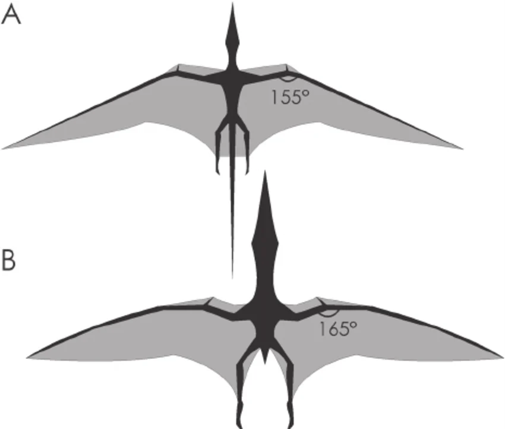

Concept Design

During the concept design phase, the object that would be built and which parts that would be articulated were decided on. The goals for the project were defined during this stage as well as a schedule to keep the project on track. Initial research to the concept was conducted to help define goals such as size and what the object will do.

The first stage was to find ideas for an articulated robotic prototype. Most ideas suggested in the group were animals with an Octopus, lizard and pterodactyl being the most likely options that would be chosen. After consideration it was decided that the mechanism for the octopus to move its tentacles would be too complex and possibly repetitive as depending on the design it would be done up to 8 times. This could also have taken up a lot of space. The group couldn’t decide on what to articulate on the lizard so that was also rejected. This meant only the pterodactyl was left and was therefore the goal for this project.
Much consideration was given to the design of the pterodactyl, including what could be articulated and which specific species it would look like. Research was done on various species of pterodactyls as well as examples of them moving. As pterodactyls have been extinct for a very long time videos of real pterodactyls could not be used as a reference point and only concept videos of how they would move could be used. Concept images also varied a lot and would not always have a specific species attached to them. It was difficult to find accurate measurements and proportions of them so during this stage it was decided to make the model a generic pterodactyl, and not a specific species so the exact proportions and any physical characteristics could be decided during the design stages. Using concept images and images of skeletons with a top-down view of the pterodactyl with the wings stretched out, the group decided that there was about a 2:1 wingspan to body ratio, so for a model with a 30cm long body the wing span should be about 60cm long.

The physical pterodactyl model will only be a prototype and not reach the full production stage. The uses of the final version could be in an environment where accuracy is not required, such as a primary school environment or a theme park. Without a more in-depth consultation with experts this model would likely not be used in a place like a museum, as they would require movement, proportions and the appearance to be accurate. A more accurate model was also difficult to achieve due to time and money constraints.
In either a primary school classroom or theme park there would be some issues that have to be taken into account. Both could have a lot of sunlight and therefore UV rays and heat could affect the materials and lead to deterioration. A glass case could be used when it is stored to reduce the effect of the sun and materials resistant to sunlight and heat would be ideal.
There are several different points of articulation that the pterodactyl could have. The main points considered were making the head move, the wings move or the legs move. The moving wings could include functionality like putting the wings on the ground to make it stand as well as flapping to make it look like it is flying. A moving head would likely include making a neck that could move as well as a jaw that opens and closes. During this phase the scope was narrowed to only focus on the wings and adding movement to the head would be considered if there was extra time at the end. This was because the group thought that the wings would be the most interesting feature for primary school children or theme park customers to watch.